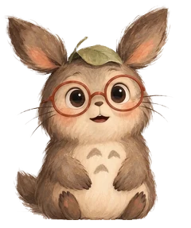

Experiment · Moss in his panel · round 2 · 2026-11-25
You picked E, his ears over the rim of the disc, and the lamp-lit big Moss. Here are more ways for the small one to pop. 1–6 are still; 7–9 move, but only at a moment, never on a loop. Each card shows the real size in the header and 3.5× underneath. "Play" runs the moving ones. Under reduced motion they all stay still.
Moss looks after this portfolio

Ah. You found me.
I’m Moss. I look after this portfolio. Short on time? Ask me something and I’ll point you at the good bits.